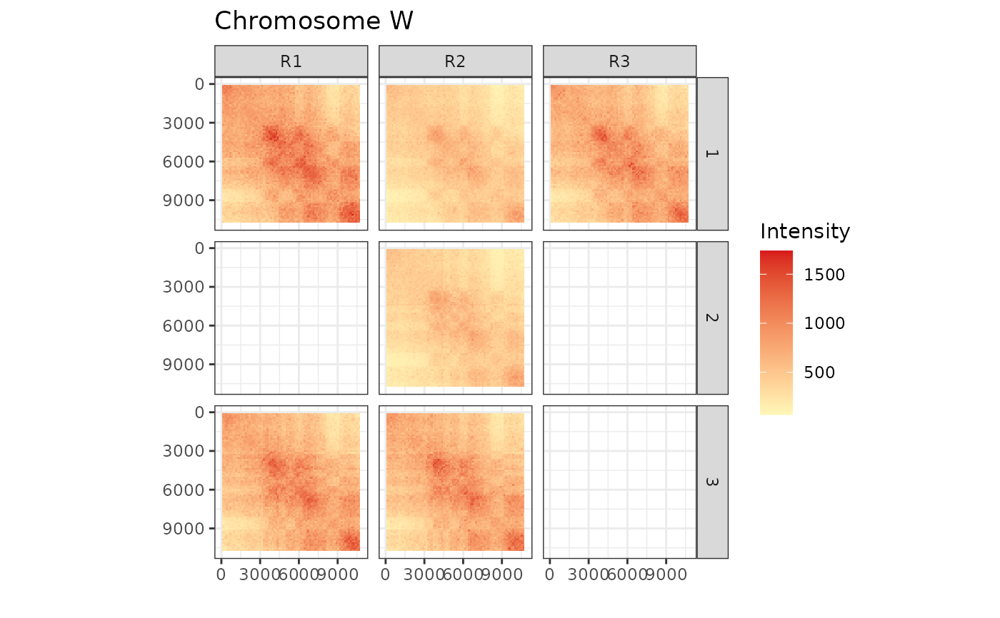

Plots the interaction matrices as heatmaps.
plotInteractions(
object,
chromosome,
transform = NULL,
colours = c(low = "#2c7bb6", mid = "#ffffbf", high = "#d7191c"),
midpoint = 0
)A chromosome name or index in chromosomes(object).
Transformation of the color scale. Default to NULL (no transformation). See
scale_fill_gradient2 for other accepted values.
A character vector colours of length 3 to use for the gradient. See
scale_fill_gradient2 for more info. Defaults to
c("low"=#2c7bb6", "mid"=#ffffbf", "high"="#d7191c").
midpoint value to be passed to scale_fill_gradient2.
Default to 0.
A ggplot.
data(exampleHiCDOCDataSet)
plotInteractions(exampleHiCDOCDataSet, chromosome = 1)
